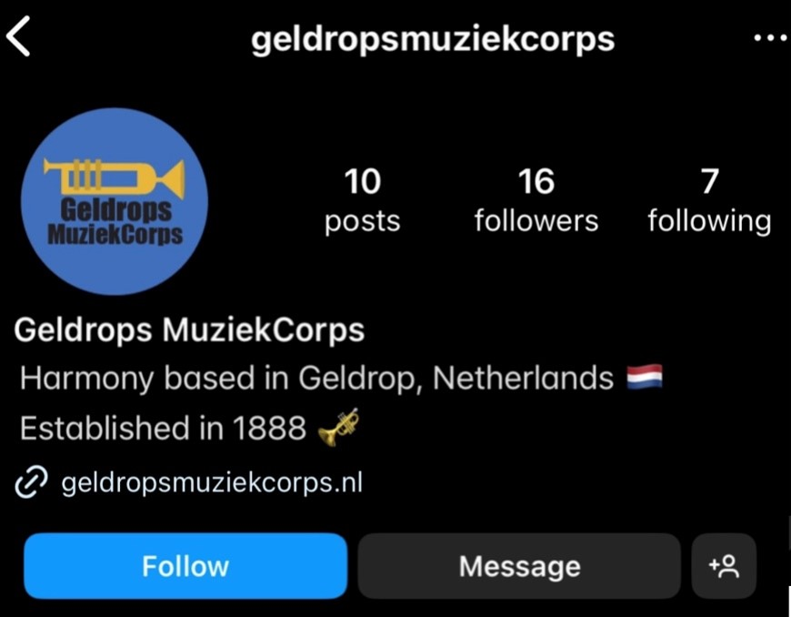

Professional Standard
Target Group Research GMC
For our Geldrops Muziek Corps group project, I conducted research on our target group for new orchestra members. I gathered information from various sources and identified the following key points:
- Benefits to learning an instrument:
- Improve social skills
- Learn teamwork
- Develop a sense of responsibility
- Improve cognitive skills
- Experience joy
- Benefits children have learning music:
- Children have ample free time
- Children learn quickly
- Children are less self-conscious
- Children have more flexible fingers
- Children have better musical memory
- Benefits adults have learning music:
- Adults are generally more disciplined
- Adults have longer attention spans
- Adults understand music theory better
Considering these points, we decided to target children aged 8-18 years old due to the numerous benefits they receive from learning music. However, recognizing that children within this age range may not typically initiate involvement in an orchestra independently, we strategically identified parents as our primary target audience. By effectively communicating the advantages of musical education and the enriching experiences offered by orchestral participation, we aim to inspire parents to actively support and encourage their children to start their music careers.
Research Target Group Geldrops MuziekcorpsTarget Group Research GMC
As part of the brand guide, we made a social media guide to help the Geldrops Muziek Corps team with outreach on social media. We covered every element on their social media pages from a centralized name to the profile picture, description, and more. We also covered what content to post on which social media platforms.
As part of our brand guide, we've created a practical social media guide for the Geldrops Muziekcrops team. This guide covers all aspects of their social media presence, from choosing a unified name and profile picture to making an engaging biography and deciding what content to post on each platform.
We also addressed common social media challenges and provided simple strategies to overcome them. For example, we emphasized the importance of a clear and memorable name and profile picture for the purpose of creating a recognizable brand.

In terms of content, we discussed the importance of consistent posts to each platform. We provided tips for creating short-form content that grabs attention and highlighted the potential of video content for storytelling and engagement.
Our social media guide is designed to help the Geldrops Muziekcrops team enhance their online presence and connect with their audience more effectively.
Social Media Guide Geldrops MuziekcorpsBrandguide Geldops Muziekcorps
Marketing Campaign Fontys ICT
For our second group project, which involved crafting a media campaign for Fontys ICT to attract more students and ensure proper awareness of the study's offerings and profiles, our initial step was to outline the main research questions and divide them into subquestions:
- Where do we target our audience?
- Where does our target audience spend their time - Digitally?
- Where does our target audience spend their time - Physically?
- How do they find places to study?
- What are our target's needs?
- What media products do Fontys already have?
- What is still unclear for the target audience?
- What does our target audience want to learn?
- What does the target audience already know?
- What are our target audience's expectations?
- How to structure a media campaign?
To structure the media campaign effectively, I analyzed multiple sources and combined the information into a cohesive plan. This plan involves setting clear objectives, understanding the target audience, crafting compelling messages, selecting appropriate marketing channels, creating engaging content, implementing the campaign diligently, monitoring performance, analyzing results, and optimizing tactics accordingly. Our goal is to effectively communicate with (potential) students and inform them about what Fontys ICT has to offer.
Research Marketing Campaign Fontys ICT